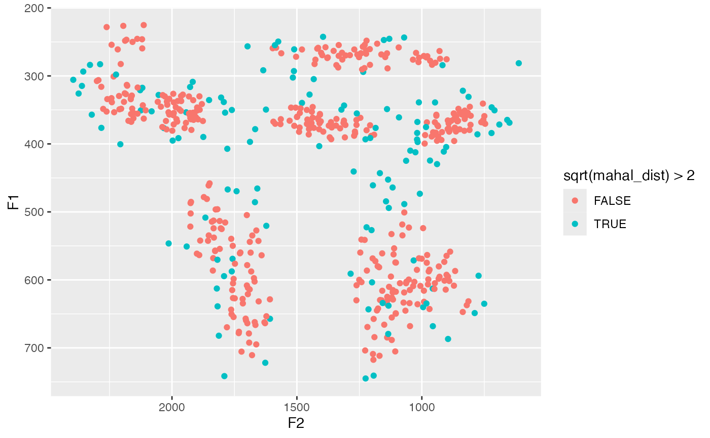
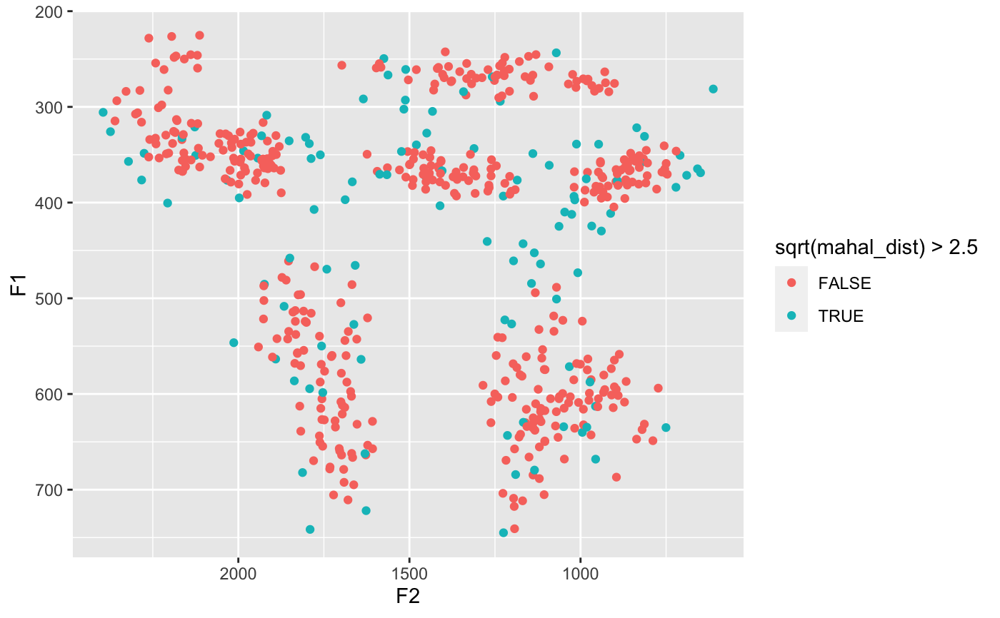

This is a tidyverse-tidyverse-compatible version of the stats::mahalanobis function. It just
makes it easier to include it as part of a dplyr::mutate.
tidy_mahalanobis(...)
| ... | Names of columns that should be included in the Mahalanobis distance. For vowel data, this is typically your F1 and F2 columns. |
|---|
A vector that contains the Mahalanobis distances for each observation.
Typically you'll want to group your data (using dplyr::group_by) by speaker and vowel
class so that you get the distance from vowel centroids.
I won't tell you what to do with those distances, but if you might consider looking at tokens where the square root of the Mahalanobis distance is greater than around 2. However, to be clear, the exact cutoff will vary depending on the size and variability of your data. You can see how you might isolate these points visually in the example code below.
One small modification that this function does that stats::mahalanobis does not do is that
if there are fewer than 5 measurements in a group, tidy_mahalanobis returns them all
as having a distance of zero. I found that this prevents some fatal errors from crashing the script
when running this function on smaller datasets.
Note that this function requires the MASS package to be installed to work, but you
don't need to load it.
suppressPackageStartupMessages(library(tidyverse)) df <- joeysvowels::midpoints # Calculate the distances m_dists <- df %>% group_by(vowel) %>% mutate(mahal_dist = tidy_mahalanobis(F1, F2)) # Take a peek at the resulting dataset m_dists %>% select(vowel, F1, F2, mahal_dist) %>% head()#> # A tibble: 6 x 4 #> # Groups: vowel [4] #> vowel F1 F2 mahal_dist #> <fct> <dbl> <dbl> <dbl> #> 1 GOAT 368. 1018. 5.66 #> 2 FACE 377. 2032. 6.52 #> 3 FACE 314. 2179. 2.16 #> 4 GOOSE 274. 1378. 0.755 #> 5 FOOT 350. 1624. 4.95 #> 6 FACE 313. 2181. 2.28# Plot potential outliers ggplot(m_dists, aes(F2, F1, color = sqrt(mahal_dist) > 2)) + geom_point() + scale_x_reverse() + scale_y_reverse()# You can include whatever numeric variables you want, like duration df %>% group_by(vowel) %>% mutate(dur = end - start) %>% mutate(mahal_dist = tidy_mahalanobis(F1, F2, dur)) %>% ggplot(aes(F2, F1, color = sqrt(mahal_dist) > 2.5)) + geom_point() + scale_x_reverse() + scale_y_reverse()# Data cannot contain NAs. Remove them before running. df[1,]$F1 <- NA df %>% group_by(vowel) %>% mutate(mahal_dist = tidy_mahalanobis(F1, F2))#> Error: Problem with `mutate()` input `mahal_dist`. #> x Your data has some NAs, which will cause `tidy_mahalnobis` to crash. Try removing NAs before running `tidy_mahalanobis`. #> ℹ Input `mahal_dist` is `tidy_mahalanobis(F1, F2)`. #> ℹ The error occurred in group 7: vowel = "GOAT".df %>% group_by(vowel) %>% filter(!is.na(F1)) %>% mutate(mahal_dist = tidy_mahalanobis(F1, F2)) %>% select(vowel_id, vowel, mahal_dist, F1, F2) %>% head()#> # A tibble: 6 x 5 #> # Groups: vowel [3] #> vowel_id vowel mahal_dist F1 F2 #> <dbl> <fct> <dbl> <dbl> <dbl> #> 1 2 FACE 6.52 377. 2032. #> 2 4 FACE 2.16 314. 2179. #> 3 5 GOOSE 0.755 274. 1378. #> 4 7 FOOT 4.95 350. 1624. #> 5 8 FACE 2.28 313. 2181. #> 6 9 GOOSE 1.63 255. 1333.